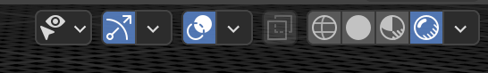
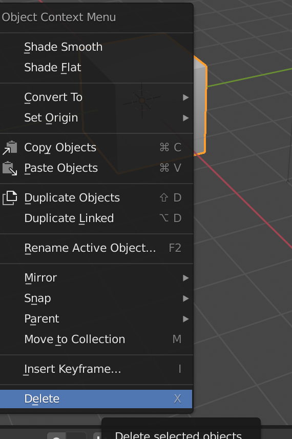
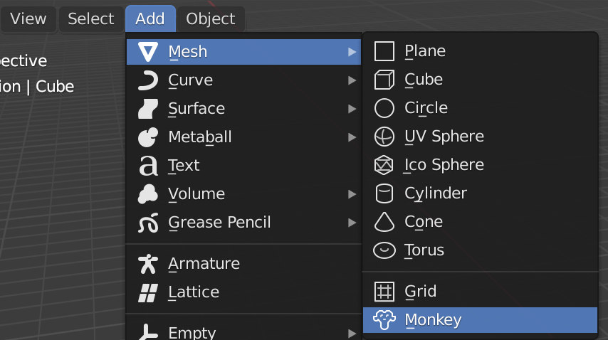

Steps
Instructions
Screenshot
1. Enable Rendered mode so you can see the effect of the lighting
Select the rightmost rendered ‘ball’ in the viewport shading
panel at the top
right of the Blender interface.

2. Delete the default cube
Left-click on the cube and press X on your keyboard to delete it. Press
Enter to confirm.

3. Add a monkey head and cone
Left-click on the cube and press X on your keyboard to delete it. Press
Enter to confirm.
